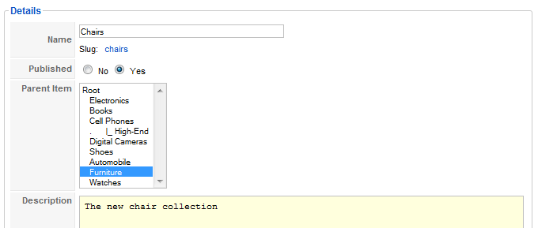
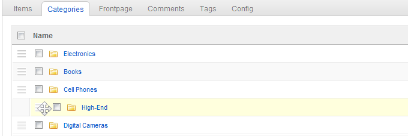

Create and manage categories
This is a tutorial on how to manage the categories of your ZOO app. It shows you how you can configure the look of the category views.
Create a new category
Click on the app instance in the tab bar of the ZOO, then click on Categories in the second tab bar. You see all categories in your app instance.

To create a new category, simply click on the New button in the top right corner of the screen.

Now you can give the category a name, set it to published, sort it into the existing categories and type a short description into the form field.

On the right side under Content you can type in a teaser description and select a teaser image. The teaser description and image are shown in the parent category. Then you can select an image, which will be shown when you display the category. As with the frontpage you can select title headlines for the categories and the items also. In the {doc: manage-the-frontpage text: tutorial for managing the frontpage} we show you, how to select the images.
In the next two tabs, Config and Template you can set individual properties overriding the global settings of the app instance configuration. In {doc: manage-the-frontpage text: this tutorial} about how to manage the frontpage we show you, how you do this.
Click on Save after finishing your configuration.
Sorting the categories
Click on the app instance in the tab bar of the ZOO, then click on Categories in the second tab bar. You see all categories in your app instance.

Move your mouse over the icon next to the checkbox of the category you want to move to another position. The mouse cursor turns into a moving cross.

Drag & Drop the category to its new position. You will see an orange line that indicates the new position, so you have full control, where the category will be placed. Move the mouse slightly from the left edge of the category list to the middle and you will see, that you can either put the category between two other categories or put it as a subcategory underneath another one.

Release the mouse button and the category will move into its new position. The new position will be saved automatically, using Ajax!